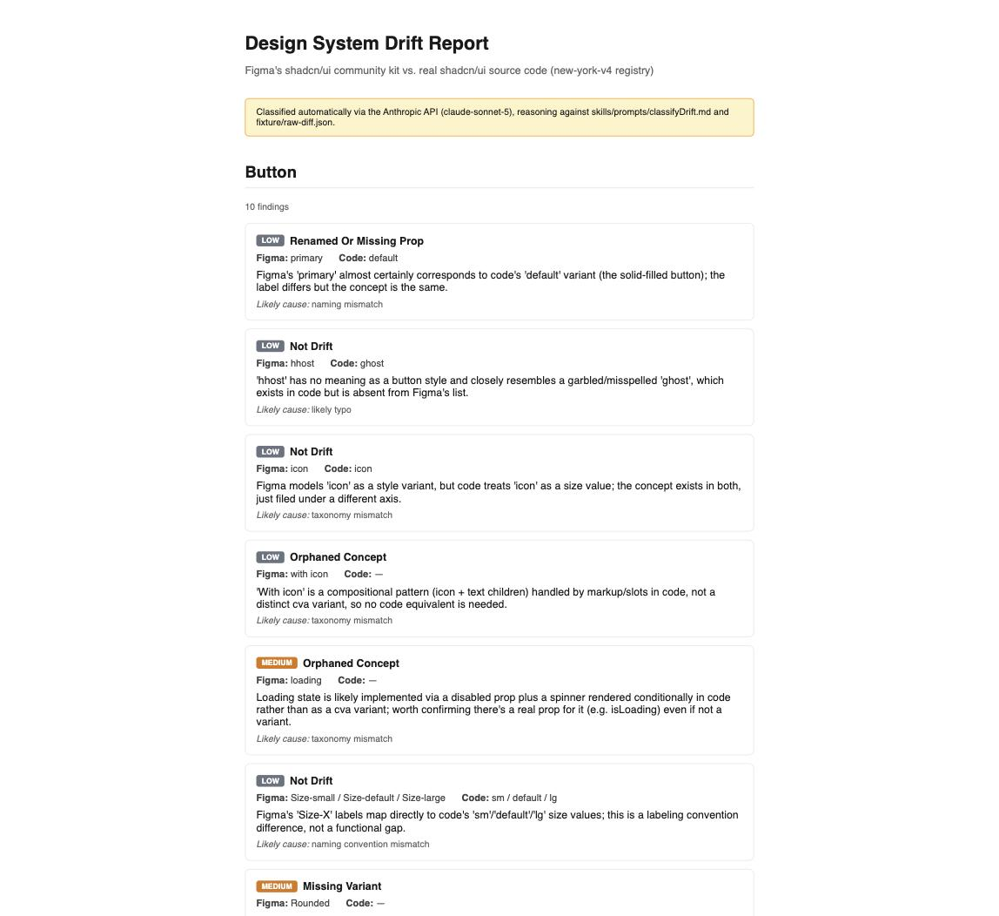
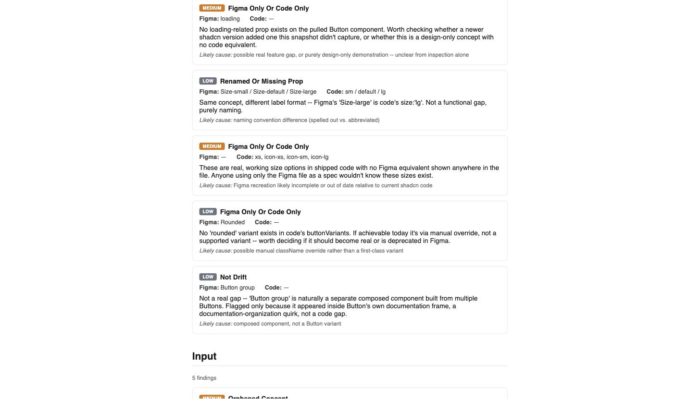
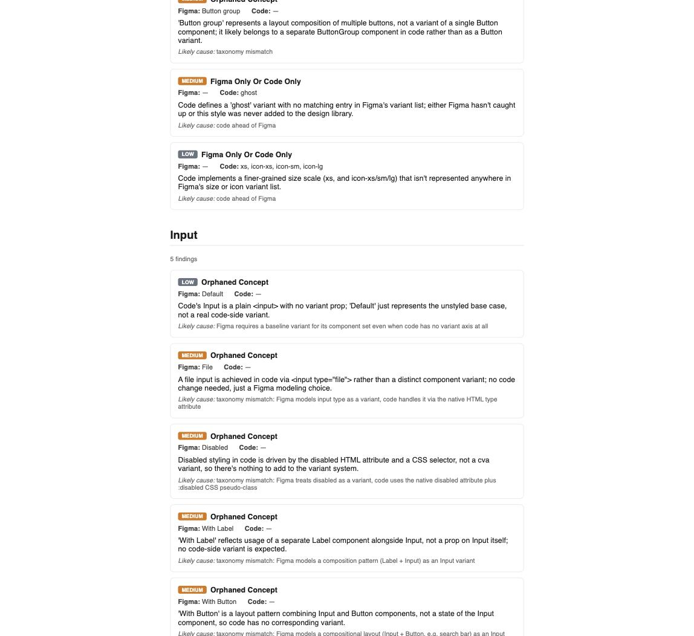

Design System Drift Auditor
Points at a Figma component library and its real coded implementation, and classifies every difference as real drift, an orphaned concept, or noise — not a plain text diff.

Every finding gets a severity, a plain-language explanation, and a likely cause — not just a diff line.
- Problem
- Figma libraries and the coded components built from them drift apart, and a plain diff can't tell real drift from naming differences and noise.
- Opportunity
- A click-to-run tool that reads the Figma library and the parsed code, then uses the Anthropic API to classify every mismatch with a severity and a reason.
- Result
- A live tool that turned two components into 15 classified findings, each with its own severity and reasoning, and caught a real bug on its first live run.
It came up while scoping my next project, near a design-systems screening call.
I built it for the portfolio, not the call, and didn't rush it.
Docs came first: a brief, classification rules, and an architecture doc.
The demo pairs a community Figma recreation of shadcn/ui with the real source code.
The recreation may never have matched exactly, so the tool only classifies what's mismatched now.
A hand-written mapping file stands in for Code Connect, which needs a paid seat.
The Figma MCP pulls variant data, and a Babel parser reads the real code.
A mechanical diff lists every mismatch, with no judgment.
A classifier sorts each one: real drift, orphaned concept, naming difference, or not drift.


Classification runs through the Anthropic API, so every run is a fresh judgment.
One Run Audit button replaced three terminal commands.
The first live run caught a real rendering bug, fixed the same session.
It's still tied to one Figma file and one codebase, from a snapshot, not a live fetch.
The parser only reads shadcn/ui's cva() pattern; other styling needs a new adapter.
A live, one-click tool that separates real fidelity gaps from noise.
It tests a third-party recreation against its source, not a real team's decay, and says so.
- Figma MCP
- AST Parsing
- LLM Classification
- Proof of Concept